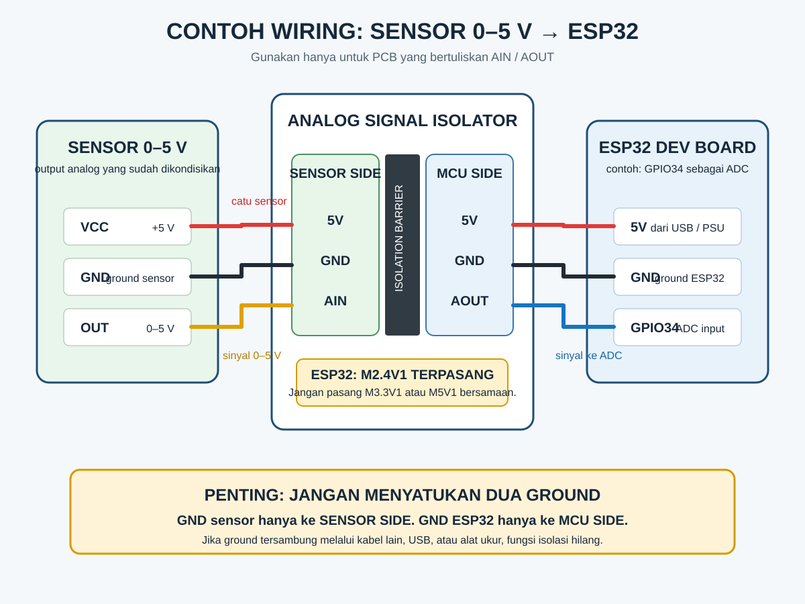
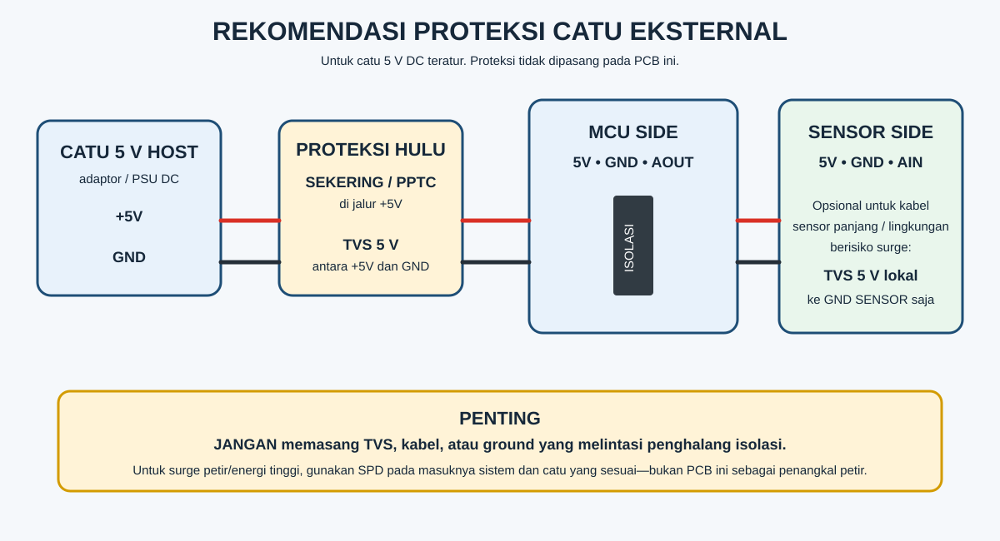

M2.4V1 sudah terpasang. Sensor, kabel, catu daya, dan board ESP32 tidak termasuk. Jangan memakai petunjuk J1/J2, VIN/VOUT, atau SW1 dari dokumen Rev B2 lama untuk memasang PCB AIN/AOUT ini. Panduan ini hanya untuk PCB bertuliskan MCU SIDE, SENSOR SIDE, AIN, AOUT, dan FIT ONE ONLY.1. Pastikan PCB Anda sama

2. Mode ESP32 sudah siap
| Host | Jumper 0 Ω yang dipasang | AOUT pada AIN = 5 V |
|---|---|---|
| ESP32 | M2.4V1 (bawaan, sudah terpasang) | sekitar 2,4 V |
| ADC 3,3 V | M3.3V1 | sekitar 3,0 V |
| Arduino 5 V / PLC | M5V1 | sekitar 4,5 V |
Area ini bertuliskan FIT ONE ONLY. Untuk ESP32, biarkan M2.4V1 terpasang. Jangan memasang lebih dari satu jumper.
3. Hubungkan seperti contoh ESP32 ini

Batas catu sensor
Pin 5V pada SENSOR SIDE untuk sensor hingga 150 mA kontinu total. Rating DC/DC 200 mA mencakup konsumsi modul dan bukan arus sensor yang tersedia penuh. Jangan gunakan keluaran ini untuk relay, motor, pemanas, atau beban dengan lonjakan arus besar; gunakan catu terisolasi eksternal.
Proteksi catu eksternal

Gunakan catu 5 V DC teratur. Pasang sekering/PPTC pada jalur +5 V sebelum MCU SIDE (pilih berdasarkan arus sistem; 250–500 mA hanya titik awal desain), lalu TVS unidirectional dengan tegangan kerja 5 V dari +5 V ke GND sesudahnya. Untuk kabel sensor panjang, TVS 5 V terpisah boleh dipasang dari 5 V ke GND SENSOR saja.
Jangan memasang TVS, kabel, atau ground yang melintasi penghalang isolasi. Untuk petir/surge energi tinggi, gunakan SPD pada masuknya panel dan catu yang sesuai.
4. Uji dan baca dengan ESP32
Dengan mode ESP32 (M2.4V1), AOUT harus mendekati 0 V saat AIN = 0 V dan sekitar 2,4 V saat AIN = 5 V. Setelah itu lakukan kalibrasi dua titik.
constexpr int PIN_AOUT = 34; constexpr float VZERO = 0.012f; // ukur sendiri pada AIN = 0 V constexpr float VFULL = 2.390f; // ukur sendiri pada AIN = 5 V float vAout = analogReadMilliVolts(PIN_AOUT) / 1000.0f; float vSensor = (vAout - VZERO) * 5.0f / (VFULL - VZERO);
GPIO34 hanya contoh; gunakan pin ADC yang tersedia di papan ESP32 Anda. Buka panduan lengkap dan kode lengkap →